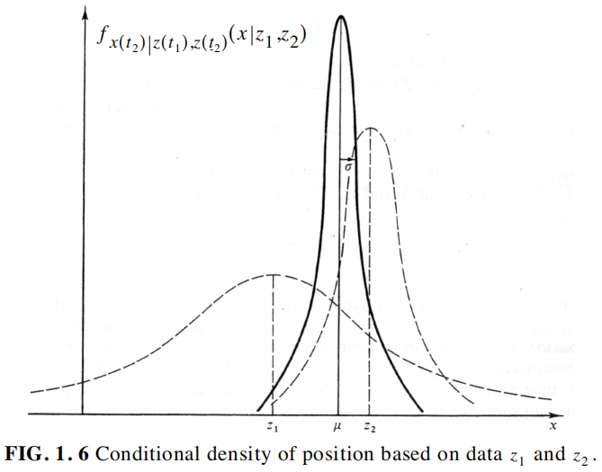

[Note & Extract] Kalman Filter Concepts
Note Taker：Lightshaker, 2020/3/4
Source：https://web.archive.org/web/20060420154727/http://www.cs.unc.edu/~welch/media/pdf/maybeck_ch1.pdf
Article：Stochastic models, estimation, and control, chapter 1, by Peter Maybeck
1.1 Why stochastic models, estimation, and control ?
Q：Why deterministic system and control theories do not provide a totally sufficient means of performing system analysis and controller design？
Answer：
- Mathematical models depicts only those characteristics of direct interest to the engineer's purpose.
- Various parameters within a deterministic structure are not determined absolutedly.
- Sensors do not provide perfect and complete data about a system.
Conclusion：To assume perfect knowledge of all quantities necessary to describe a system completely and/or to assume perfect control over the system is naive, and often inadequate, approach.
Thus four questions are come up with：
- How do you develop system models that account for these uncertainties in a direct and proper, yet practical, fashion?
- Equipped with such models and incomplete, noise-corrupted data from available sensors, how do you optimally estimate the quantities of interest to you?
- In the face of uncertain system descriptions, incomplete and noise-corrupted data, and disturbances beyond your control, how do you optimally control a system to perform in a desirable manner?
- How do you evaluate the performance capabilities of such estimation and control systems, both before and after they are actually built?
1.2 Overview of the text
Chapter 1-2：Review the pertinent aspects of deterministic system models.
3：Develop both the general concepts and the natural result of static system models.
4：Investigate stochastic process, concluding with practical linear dynamic system.
5：Explore optimal filtering for cases in which linear system model adequately describes the problem dynamics.
6：Describe the design and performance analysis of pratical online Kalman filter.
7：Introduce the Square root filters.
1.3 The Kalman filter：An introduction to concepts
Q：What is Kalman Filter?
A：An optimal recursive data processing algorithm, which processes all available measurements, regardless of their precision, to estimate the current value of the variables of interest.
Condition：A Kalman filter performs this conditional probability density propagation for problems in which the system can be described through a linear model and in which system and measurement noises are white and Gaussian.
Practicalities：Do not require all previous data to be kept in storage and reprocessed every time a new measurement is taken.
Case：Often Variables of interest, some finite number of quantities to describe the "state" of the system, cannot be measured directly, and some means of inferring these values from the available data must be generated.
Need：
- Knowledge of the system and measurement device dynamic.
- The statistical description of the system noises, measurement error, and uncertainty in the dynamics models.
- Any available information about initial conditions of the variables of interest.
Plot of Conditional Probability Density：
- Its shape conveys the amount of certainty you have in the knowledge of the value of x.
- If the density plot is a narrow peak, then most of the probability "weight" is concentrated in a narrow band of x values.
- If the plot has a gradual shape, the probability "weight" is spread over a wider range of x, indicating that you are less sure of its value.
With the CPD, we can define the "optimal" estimate in these choices (3 assumptions)：
- the mean -- the "center of probability mass" estimate.
- the mode -- the value of x that has the highest probability, locating the peak of the density.
- the median -- the value of x such that half of the probability weight lies to the left and half to the right of it.
1.4 Basic assumptions
BandPass：a frequency range of inputs to which a physical system can respond, above which the input either has no effect, or the system so severely attenuates the effect that it essentially does not exist.
Why White Noise?：
"Whiteness" implies that the noise value is not correlated in time, also claims that the noise has equal power at all frequencies. Since this results in a noise with infinite power, a white noise obviously connot really exist.
Typically a system will be driven by wideband noise, which differs from white noise just in the limited bandwidth.
By replacing the real wideband noise with a white noise, the mathematics involved in the filter can be vastly simplified which, and from the system's "point of view", they are identical.
What if the noise is not power-constant or time-correlated?
A white noise put through a small linear system can duplicate virtually any form of time-correlated noise. This small system is call a "shaping filter", added to the original system to achieve an overall linear system driven by white noise.
Why Gaussian densities?：
Wheraes whiteness pertains to time or frequency relationships of a noise, Gaussianness has to do with its amplitude.Thus at any single point in time, the probability density of a Gaussian noise amplitude takes on the shape of a normal bell-shape curve.
It can be shown mathematically that when a number of independent random variables are added together, the summed effect can be described very closely by a Gaussian probability density, regardless of the shape of the individual densitities.
An engineer will know, at best, the first and second order statictics of a noise process, but in the absence of higher order statistics, there is no better form to assume than the Gaussian density, because Gaussian density can be completely determined by the first and second order statistics, while most of others require an endless number of that to specify their shape entirely.
Gaussian densities is virtually the best approximation, and it makes mathematics tractable.
1.5 A simple example
According from the probability theories, the larger $$ is , the broader the probability peak is. For a Gaussian density, 68.3% of the probability "weight" is contained with the band \(\sigma\) units to each side of the mean.
Part I
Scene：Suppose being lost at sea during the night and have no idea at all of your location. You can only establish your position by taking a star sighting.
Measurement：Your establishment of the conditional probability of \(x(t_1)\), conditioned on the observed value of measurement being \(z_1\), with standard deviation \(\sigma_{z_1}\) or variance \(\sigma_{z_1}^2\).
Thus the conditional density of your position at time \(t_1\), based only on \(z_1\) is：
Based on conditional probability density, the best estimate of your position is \[ \hat x(t_1) = z_1 \tag{1} \] and the variance of the error in the estimate is \[ \sigma^2(t_1) = \sigma^2_{z_1} \tag{2} \] Note that \(\hat x\) is both the mode and the median, as well as the mean.
Part II：
Scene：After the prediction, a trained navigator friend takes an independent fix at time \(t_2 \approx t_1\).
Measurement： He obtains a measurement \(z_2\) with standard deviation \(\sigma_{z_2}\) or variance \(\sigma_{z_2}^2\).
Because he has higher skill, assume the variance in his measurement to be somewhat smaller that in yours. \[ \sigma_{z_2} < \sigma_{z_1} \] Thus the conditional density of your position at time \(t_1\), based only on \(z_2\) is：
Analysis
Q：Now you have two measurements available for estimating your position, how do you combine these data?
A：Based on the assumptions made, the conditional density of your position at time $t_2 t_1 $, \(x(t_2)\), given both \(z_1\) and \(z_2\), is Gaussian density with mean \(\mu\) and variance \(\sigma^2\) with \[ \begin{align} \\ &\mu = [\sigma_{z_2}^2/(\sigma_{z_1}^2 + \sigma_{z_2}^2)]z_1 + [\sigma_{z_1}^2/(\sigma_{z_1}^2 + \sigma_{z_2}^2)]z_2 \tag{3} \\\\\\ &1/\sigma^2 = (1 + \sigma_{z_1}^2) + (1 + \sigma_{z_2}^2) \tag{4} \end{align} \] The conditinal density curve is：

Note that \(\sigma\) is less than either \(\sigma_{z_1}\) or \(\sigma_{z_2}\), which is to say that the uncertainty in your estimate of position has been decreased by comb
ining the two pieces of information.
Given this density, the best estimate is \[ \hat x(t_2) = \mu \tag{5} \] Furthermore, it is also the maximum likelihood estimate, the weighted least squares estimate, and the linear estimate whose variance is less than that of any other linear unbiased estimate. In other words, it is the "best" you can do according to just about any reasonable criterion.
Deeper Thoughts：
The \(\mu\) we got means \(\sigma_{z_1}\) were equal to \(\sigma_{z_2}\), indicating that the two measurements are of equal precision. Actually \(\sigma_{z_1}\) is greater than \(\sigma_{z_2}\), thus the "weight" of \(z_2\) is surely bigger than that of \(z_1\), then finally the variance of the estimate is less than \(\sigma_{z_1}\) regardless of how large \(\sigma_{z_2}\) is.
Therefore \(\hat x(t_2)\) can be rewritten as \[ \begin{align} \mu &= [\sigma_{z_2}^2/(\sigma_{z_1}^2 + \sigma_{z_2}^2)]z_1 + [\sigma_{z_1}^2/(\sigma_{z_1}^2 + \sigma_{z_2}^2)]z_2 \\\\\\ &= z_1 + [\sigma_{z_1}^2/(\sigma_{z_1}^2 + \sigma_{z_2}^2)][z_2-z_1] \tag{6} \end{align} \] let \(z_1\) be replaced by \(\hat x(t_1)\), we can get the final form actually used in Kalman filter implementations \[ \hat x(t_2) = x_(t_1) + K(t_2)[z_2 - \hat x(t_1)] \tag{7} \] where the Kalman gain is \[ K(t_2) = \sigma_{z_1}^2/(\sigma_{z_1}^2+\sigma_{z_2}^2) \tag{8} \] then Eq.(2) can be rewritten as \[ \sigma_x^2(t_2) = \sigma_x^2(t_1) - K(t_2)\sigma_x^2(t_1) \tag{9} \] some explanation：
\(\hat x (t_1)\)：the best prediction of the optimal estimate at time \(t_2\), before $z_2 $ is taken.
\(\hat x(t_2)\)：the optimal estimate at time \(t_2\), after \(z_2\) is taken.
\(K(t_2)\)：a correction term of an optimal weighting value times the difference between \(z_2\) and \(\hat x(t_1)\)
Introduce dynamics factor：
Scene：Suppose that you travel for some time before taking another measurement.
Form： \(dx/dt = u+w\), including，\(u\)：a nominal velocity，
\(w\)：a noise term used to represent the uncertainty in your knowledge of the actual velocity due to disturbances, off-nominal conditians, effects not accounted for in the simple first order equation, and the like, modeled as a white Gaussian noise with a mean of zero and variance of \(\sigma_w^2\).
As time progresses, the probability density starts at the best estimate, moves according to the nominal model of dynamics, and spreads out in time because you become less sure of your exact position due to constant addition of uncertainty over time.
The density of prediction can be expressed mathematically as a Gaussian density with mean and variance given by \[ \begin{align} \hat x(t_3^-) &= \hat x(t_2) + u[t_3-t_2] \tag{11} \\\\\\ \sigma_x^2(t_3^-) &= \sigma_x^2(t_2) + \sigma_w^2[t_3-t_2]\tag{12} \end{align} \] Now a measurement is taken, and its mean turns out to be \(z_3\), with a variance to be \(\sigma_{z_3}^2\), as before, there are two Gaussian densities available that contain information about position, one encompassing all the information available before the measurement, and the other being the information provided by the measurement itself.
The density with mean \(\hat x(t_3^-)\) and variance $x2(t_3-) $ is combined with the density with mean \(z_3\) and variance $^2{z_3} $ to yield a Gaussian density with mean \[ \hat x(t_3) = \hat x(t_3^-) + K(t_3)[z_3 - \hat x(t_3^-)] \tag{13} \] and variance \[ \sigma_x^2(t_3) = \sigma_x^2(t_3^-) - K(t_3)\sigma_x^2(t_3^-) \tag{14} \] where the gain \(K(t_3)\) is given by \[ K(t_3) = \sigma_x^2(t_3^-) / [\sigma_x^2(t_3^-) + \sigma_{z_3}^2 ] \tag{15} \]
Analysis about \(K(t_3)\)
Observe the form of the equation for \(K(t_3)\).
If \(\sigma_{z_3}\), the measurement noise variance, is large, then \(K(t_3)\) is small, which mean you put little confidence in a very noisy measurement and so would weight it lightly.
In the limit as \(\sigma_{z_3}^2 \rightarrow \infty\), \(K(t_3)\) will become zero, and \(\hat x(t_3)\) equals \(\hat x(t_3^-)\), which means an infinitely noisy measurement is totally ignored.
If the dynamic system noise variance \(\sigma_w^2\) is large, then \(\sigma_x^2(t_3^-)\) will be large and so will \(K(t_3)\). In this case, you are not very certain of the output of the system model within the filter structure and therefore would weight the measurement heavily.
In the limit as \(\sigma_w^2 \rightarrow \infty\), \(\sigma_x^2(t_3^-) \rightarrow \infty\), \(K(t_3)\rightarrow 1\), therefore \(\hat x(t_3)\) equals \(z_3\). It means you have no confidence in the system model output, to use the new measurement as the optimal estimate.
Finally, if \(\sigma_x^2(t_3^-)\) should ever become zero, then so does \(K(t_3)\). This is sensible since if \(\sigma_x^2(t_3^-) = 0\), you have absolutely sure of your estimate before \(z_3\) becomes available and therefore can disregard the measurement.
A preview
To yield a general Kalman filter algorithm：
Extend Eqs.(11) and (12) to the vector case.
Allow time varying parameters in the system and noise descriptions.
What can the KF algorithm do?
It can be used for propagating the conditional density and optimal estimate from one measurement sample time to the next.
Similarily, the Kalman filter update at a measurement time is just the extension of Eqs.(13) -(15) , further logical extensions tould include：
- Estimation with data beyond the time when variables are to be estimated.
- Estimation with nonlinear system models rather than linear.
- Control of systems described through stochastic models.
- Both estimation and control when the noise and system parameters are not known with absolute certainty.